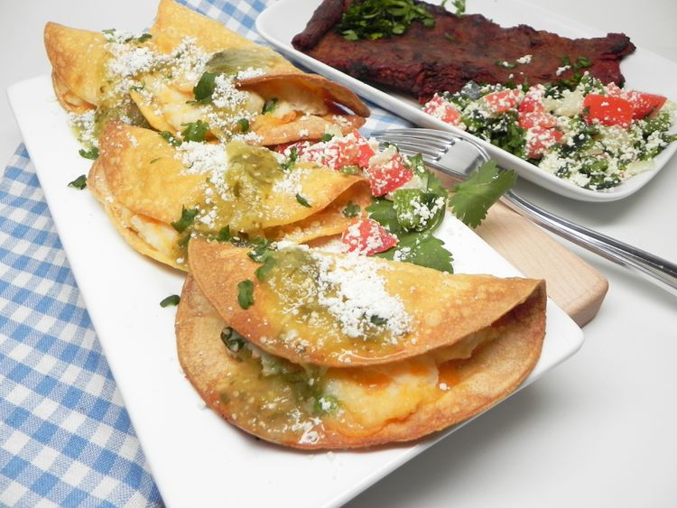

Air Fryer Tacos de Papa
Home

I honestly couldn't make a recipe list without atleast one airfryer recipe.
There's nothing quite as convienent and effective as an airfryer and I've loved
experimenting with what it can enable me to make. Potato tacos are one of my favorite things to get
at tacobell, and so making better ones at home, that's a no brainer.
Ingredients
- 2 cups water
- 1 (4 ounce) package instant mashed potatoes
- ½ cup shredded Cheddar cheese
- 1 green onion, chopped
- ½ teaspoon ground cumin
- 10 corn tortillas
- 1 serving nonstick cooking spray
- ½ cup salsa verde
- ¼ cup crumbled cotija cheese
Instruction
- Heat water in a medium saucepan to boiling. Remove from the heat and stir in instant mashed potatoes. Mix thoroughly with a fork to moisten all potatoes and let stand 5 minutes. Stir in Cheddar cheese, green onion, and cumin.
- Preheat an air fryer to 400 degrees F (200 degrees C).
- Wrap tortillas in a damp paper towel and microwave on high until warm, about 20 seconds.
- Spread 1 tablespoon potato mixture in the center of a tortilla and fold over to make a taco. Repeat with remaining tortillas.
- Working in batches, place tacos in the basket of an air fryer. Spray the tops with cooking spray and cook until crispy, about 5 minutes. Transfer to a serving platter and repeat to cook remaining tacos.
- Drizzle salsa verde over tacos and top with cotija cheese.